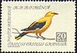
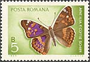
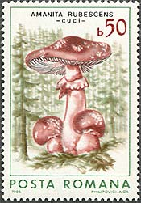
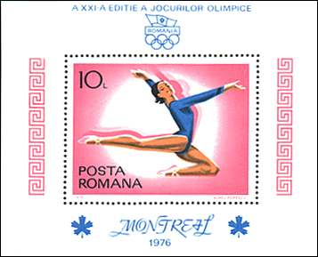
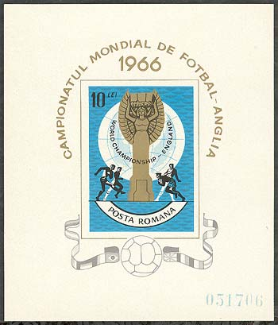
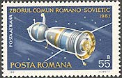

Miscellaneous
Exhibitions, nature, sport and unusual stories from the world of Romanian philately.
 Sites at EFIRO 2008
Sites at EFIRO 2008 A Mauritius in Romania?
A Mauritius in Romania? Wildlife
Wildlife
Birds
Butterflies My Friend the Dog
My Friend the Dog
Mushrooms OSP - 1948 Minisheets
OSP - 1948 Minisheets Nadia Comaneci
Nadia Comaneci Champions to Be Forgotten
Champions to Be Forgotten
Champions
Soccer World Championships - 1 Soccer World Championships - 2
Soccer World Championships - 2
The Space Conquest EchoArticleRomanian LinksContact me
EchoArticleRomanian LinksContact meComplete article directory
Articles retain their original text and illustrations in the refreshed layout.